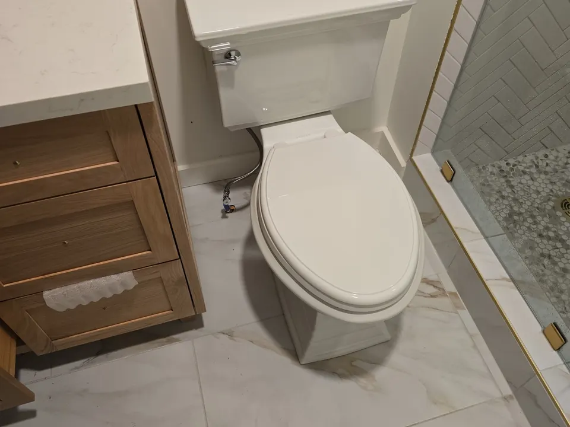
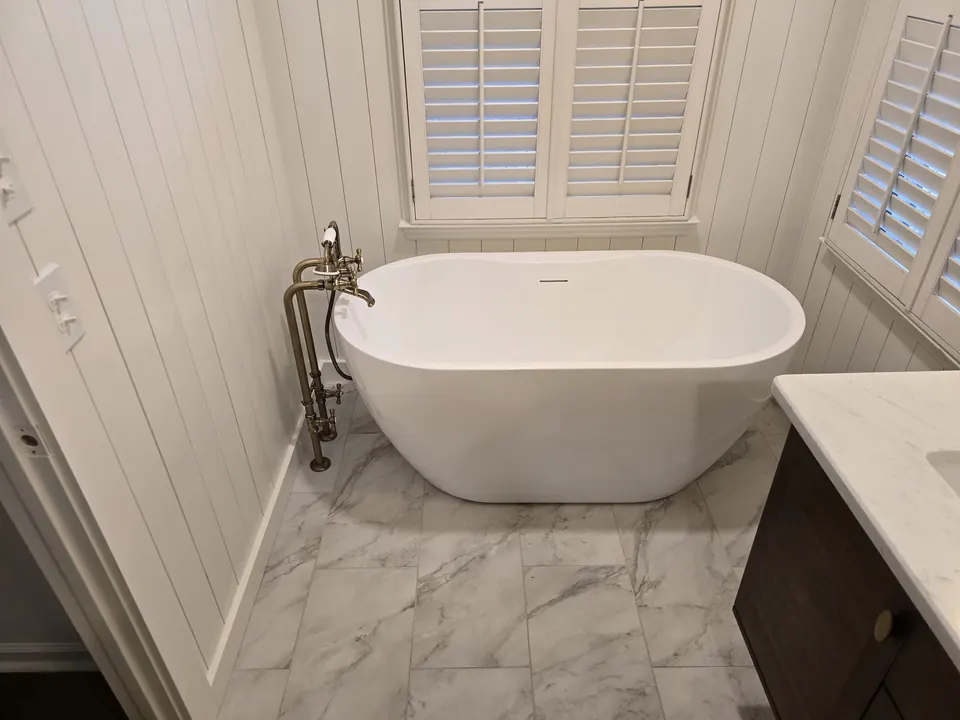

From dripping faucets and running toilets to sink replacements and shower fixture upgrades, our team delivers dependable service designed to keep your plumbing working properly while enhancing the look and function of your kitchen, bathroom, laundry room, and other living spaces.
Schedule Plumbing Fixture Service Today!
Professional Plumbing Fixture Services for Your Home
Plumbing fixtures are some of the most frequently used components in your home. Over time, they can wear out, leak, become outdated, or stop performing as they should. At Angle Stop Plumbing, we provide a full range of plumbing fixture services to help homeowners maintain efficient, dependable plumbing systems.

Our fixture services may include:
- Faucet repair and replacement
- Sink installation and repair
- Toilet repair and installation
- Shower fixture repair and replacement
- Bathtub fixture installation
- Garbage disposal installation and replacement
- Kitchen fixture upgrades
- Bathroom fixture services
- Laundry room fixture installation
- Water-saving fixture upgrades
Whether you need to fix a single problem fixture or update multiple plumbing features in your home, we provide practical solutions tailored to your needs.
Plumbing Fixtures We Repair and Install
At Angle Stop Plumbing, we work with a wide range of residential plumbing fixtures. Our services cover many of the most important water-using features throughout your home, including:
Faucets
A dripping or leaking faucet can waste water and become a daily frustration. We repair and replace kitchen faucets, bathroom faucets, utility sink faucets, and other household fixtures to restore performance and improve efficiency.
Toilets
If your toilet is running, leaking, clogging frequently, or no longer working properly, we can diagnose the issue and provide the right repair or replacement solution.

Sinks
We install and service kitchen sinks, bathroom sinks, utility sinks, and related plumbing connections to make sure your fixture functions properly and looks great.
Shower and Tub Fixtures
From showerheads and tub spouts to handles and trim kits, we repair and install fixtures that help improve comfort, water flow, and overall bathroom appearance.
Garbage Disposals
A faulty garbage disposal can create clogs, odors, and inconvenience in your kitchen. We provide disposal installation and replacement services to keep your sink area working smoothly.

Signs You May Need Plumbing Fixture Services
You may need professional plumbing fixture services if you notice any of the following:
- Dripping faucets or visible leaks
- Rusted, corroded, or outdated fixtures
- Running toilets or weak flushing performance
- Low water pressure at a sink or shower fixture
- Loose handles, worn parts, or broken components
- Water stains or moisture around sinks and fixtures
- Fixtures that no longer match your remodeling goals
- Higher water bills caused by fixture leaks or inefficiency
Repairing or replacing problem fixtures early can help prevent water waste, property damage, and larger plumbing issues.
Fixture Repair, Replacement, and New Installation
At Angle Stop Plumbing, we offer complete fixture solutions based on the condition of the fixture and your goals for the space.
Fixture Repair
Some plumbing fixtures can be restored with targeted repairs, such as replacing worn washers, cartridges, seals, fill valves, or other parts. Repair can often be the most cost-effective option when the fixture is still in otherwise good condition.
Fixture Replacement
If a fixture is outdated, heavily worn, leaking repeatedly, or no longer worth repairing, replacement may be the better long-term choice. New fixtures can improve performance, reduce water use, and update the look of your kitchen or bathroom.
New Fixture Installation
If you are remodeling or upgrading your home, we install new plumbing fixtures with careful attention to fit, function, and proper water connections. Our goal is to help ensure long-lasting performance and a clean, professional finish.
Check Manufacturer Customer Service Team
Take a few minutes to check with the fixture manufacture to see if they are willing to send the parts necessary to complete the fixture repair. Oftentimes, manufacturers will ship parts to homeowners saving them the cost of replacement parts.
Benefits of Upgrading Your Plumbing Fixtures
New or properly maintained fixtures offer more than just visual appeal. Professional plumbing fixture services can provide several important benefits:
- Improved water efficiency
- Reduced leaks and water waste
- Better reliability and day-to-day function
- Enhanced appearance in kitchens and bathrooms
- Increased comfort and convenience
- Support for remodeling and home improvement projects
Even a small fixture upgrade can make a noticeable difference in the way your home looks and functions.
Why Choose Angle Stop Plumbing for Plumbing Fixture Services?
When you need a dependable plumber for plumbing fixture services, experience and attention to detail matter. Customers choose Angle Stop Plumbing because we provide:
- Prompt and professional service
- Careful fixture repair and installation
- Honest recommendations based on your needs
- Clear communication throughout the process
- Quality workmanship and reliable plumbing solutions
- Respectful service for your home and property
We focus on making fixture repairs and upgrades simple, efficient, and stress-free.
Schedule Plumbing Fixture Services With Angle Stop Plumbing
If you need help with leaking, outdated, or damaged plumbing fixtures, contact Angle Stop Plumbing for professional plumbing fixture services. Our team is ready to repair, replace, or install the fixtures you need to keep your home working efficiently and looking its best.
Trust Angle Stop Plumbing for reliable fixture repairs, quality installations, and responsive residential plumbing service.